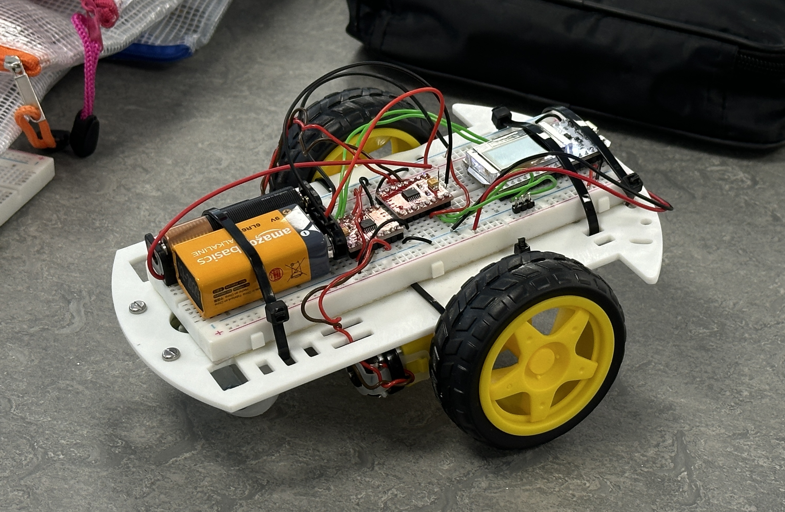
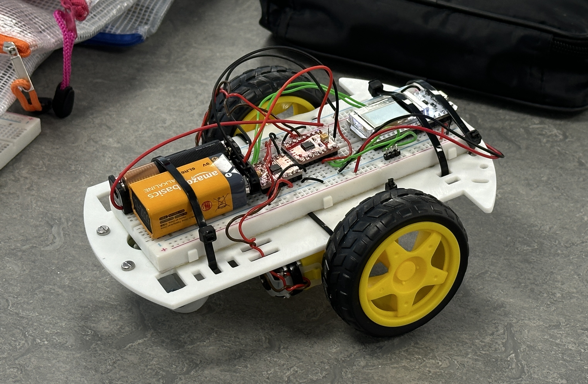
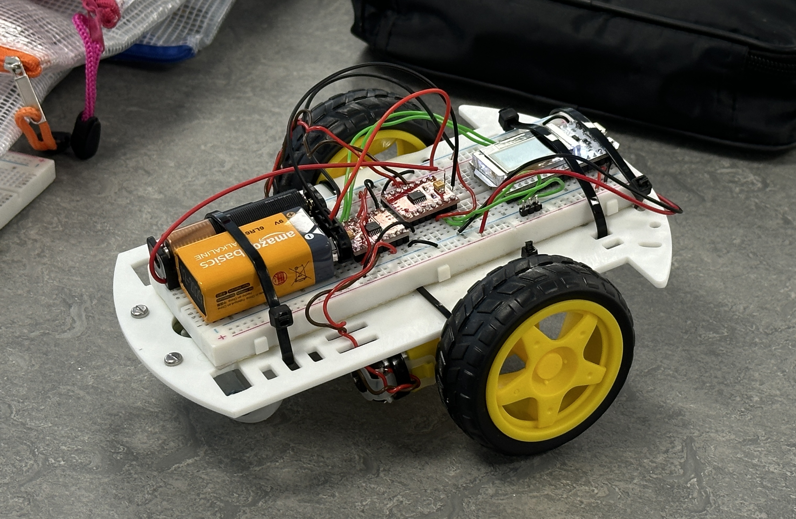

Developed a Bluetooth remote-controlled car driven and controlled using an ESP32 microcontroller and H-bridge modules, programmed in MicroPython. The car ultimately won first place in the project during an internal departmental competition.

This is a CAD model of a internal pipe climber design solution, which was a project completed prior to studying at Imperial College.


Our team collaborated to combine the designs of the RC car and the pipe climber, creating an engineering workshop tailored for middle school students. Over two weeks, we taught engineering design principles and relevant knowledge to 10 students, guiding them in the design and development of three different types of external pipe-climbing robots. We implemented remote Bluetooth control for speed and direction, used CAD software for body design, and employed 3D printing for fabrication. The image below shows the brochure I created for the activity, and the video features the final project results of one of the student groups.


LV 2024